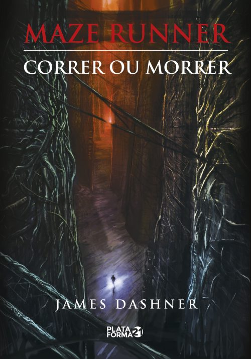
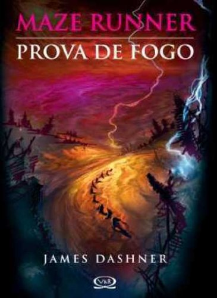
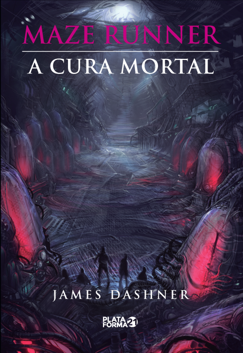
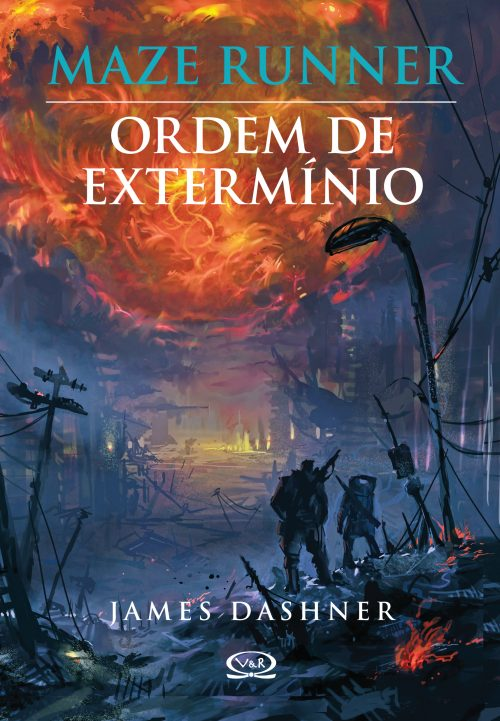
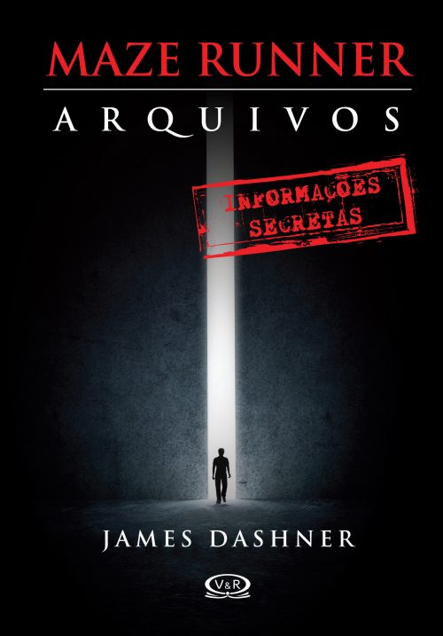
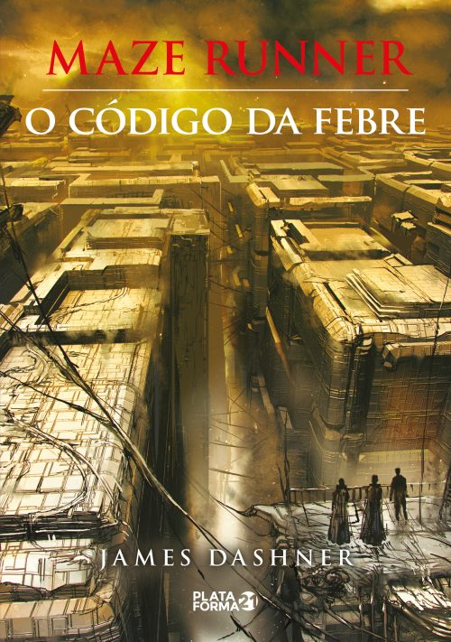

Olá, neste artigo vamos falar sobre a série de livros Maze Runner.
The Maze Runner ou Maze Runner é uma saga contendo seis livros. São eles:
- Correr ou Morrer (2009)
- A Prova de Fogo (2010)
- A Cura Mortal (2011)
- Ordem de Extermínio (2012)
- Arquivos (2013)
- O Código da Febre (2016)
Aqui vamos falar sobre cada um deles.
Correr ou Morrer (2009)

Ao acordar dentro de um escuro elevador em movimento, Thomas não consegue se lembrar de nada relacionado à sua vida, consegue se lembrar apenas do seu nome. A sua memória está completamente apagada. Mas ele não está completamente sozinho.
A caixa metálica chega ao seu destino e as portas se abrem, Thomas vê-se rodeado por garotos que o acolhem e o apresentam à Clareira, um espaço aberto cercado por muros gigantescos. Assim como Thomas, nenhum deles sabe como foi parar ali, nem por quê. Sabem apenas que todas as manhãs as portas de pedra do Labirinto que os cerca se abrem, e, à noite, se fecham. E que a cada trinta dias um novo garoto é entregue pelo elevador. Porém, um fato altera de forma radical a rotina do lugar - chega uma garota, a primeira enviada à Clareira. E mais surpreendente ainda é a mensagem que ela traz consigo.
Thomas será mais importante do que imagina, mas para isso terá de descobrir os sombrios segredos guardados em sua mente e correr, correr muito.
A Prova de Fogo (2010)

Depois de superarem os perigos mortais e cruéis do Labirinto, Thomas e seus amigos acreditam que estão a salvo em uma nova realidade. Mas a aparente tranquilidade é interrompida quando são acordados no meio da noite por gritos lancinantes de criaturas disformes - os Cranks - que ameaçam devorá-los vivos. Atordoados, os Clareanos descobrem que a salvação aparente na verdade pode ser outra armadilha, ainda pior que a Clareira e o Labirinto. E que as coisas não são o que aparentam. Para sobreviver nesse mundo hostil, eles terão de fazer uma travessia repleta de provas cruéis em um meio ambiente devastado, sem água, comida ou abrigo.
Calor causticante durante o dia, rajadas de vento gélido à noite, desolação e um ar irrespirável - no Deserto do novo mundo até mesmo a chuva é a promessa de uma morte agonizante. Eles, porém, não estão sozinhos - cada passo é espreitado por criaturas famintas e violentas, que atacam sem avisar.
Manipulação, mentiras e traições cercam o caminho dos Clareanos, mas para Thomas a pior prova será ter de escolher em quem acreditar.
A Cura Mortal (2011)

Por trás de uma possibilidade de cura para o Fulgor, Thomas irá descobrir um plano maior, elaborado pelo CRUEL, que poderá trazer consequências desastrosas para a humanidade. Ele decide, então, entregar-se ao Experimento final. A organização garante que não há mais nada para esconder. Mas será possível acreditar no CRUEL? Talvez a verdade seja ainda mais terrível... uma solução mortal, sem retorno.
Ordem de Extermínio (2012)

Antes de o CRUEL existir, antes que houvesse o labirinto e muito antes que Thomas ingressasse na Clareira, as chamas solares assolaram a Terra e destruíram o mundo que a humanidade considerava salvo...Mark e Trina estavam lá quando tudo aconteceu, e sobreviveram. Mas sobreviver as chamas foi fácil se comparado ao que viria depois. Agora, um vírus que toma conta da mente com violência e dor se espalha por todo lugar e existe algo muito suspeito sobre sua origem. Pior ainda: ele está em mutação e as evidências sugerem que a humanidade se ajoelhará diante do caos, prevendo uma morte inevitável e assustadora. Mark e Trina estão convencidos de que existe uma maneira de salvar os poucos que restaram. E estão certos de que podem encontrá-los. Porque neste novo e devastado mundo, cada vida tem um preço. A sua também. E para alguns, você vale muito mais morto do que vivo.
Arquivos (2013)

Neste volume o leitor terá acesso a documentos confidenciais: e-mails entre os funcionários do CRUEL, memorandos que deveriam ter sido destruídos logo após serem lidos e uma seleção das lembranças de alguns Clareanos. Todos esses arquivos compõem mais esta joia escrita por James Dashner e ilustrada por Marcelo Orsi Blanco, que oferece um olhar único para o mundo de Maze Runner e uma leitura obrigatória para os fãs da saga. Logo que tiver acesso a estas informações, o leitor saberá claramente se o CRUEL é bom ou não.....
O Código da Febre (2016)

Era uma vez o fim do mundo! Florestas foram queimadas, lagos e rios secaram, oceanos transbordaram. Uma peste febril se espalhou pela Terra, dizimando famílias inteiras. Homem matou homem. A violência reinou. Não havia mais lugares seguros. Então, surgiu o CRUEL. Pesquisa após pesquisa, essa organização não mediu esforços para encontrar respostas... para encontrar a cura. O CRUEL fez testes em crianças. Algumas delas, além de imunes, eram especiais... como Thomas e Teresa. Juntos eles foram designados a trabalhar em um experimento: o Labirinto. Mas, ao que parece, nem tudo foi dito. Segredos e mentiras irão perturbar Thomas. Quais relações de lealdade são realmente verdadeiras? O código da febre é a aguardada prequel da saga Maze Runner. Prepare-se, porque nada será como antes. Todas as respostas serão reveladas.h2>
Informações:
Autor: james Dashner
Título original: The Maze Runner
Tradutor: Brasil: Henrique Monteiro; Portugal: Marta Mendonça
Idioma Original: Inglês
Publicado entre: 2009-2016 (EUA); 2010-2016 (BR)
Editora: EUA: Delacorte Press; Brasil: Vergara & Riba Editoras; Portugal: Editorial Presença
País: Estados Unidos
Gêndero: Aventura; Ficção Científica; Distopia